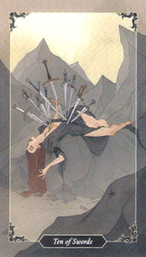

10 мечів
Пряме значення
завершение цикла. Деструктивные мысли и паттерны более не управляют вами. Все, с чем было связано ваше самоощуще ние, уходит, когда цикл завершается, - даже самые мрачные и страшные вещи. Эта смерть прежде всего ведет к новому проявлению вашей души, к новым возможностям и новой истории.
Перевернуте значення
перестаньте изображать мертвеца. Посмотрите на свет. Выпрямитесь. Проявляйте заботу о себе и других. Не забывайте о своей ответственности. Новые возможности ждут вас. Ваше время пришло, вы получаете возможность контролировать развитие событий.
Відносини / кохання
Здоров'я
Кар'єра / Бізнес
Карта дня
Порада
Так / Ні
